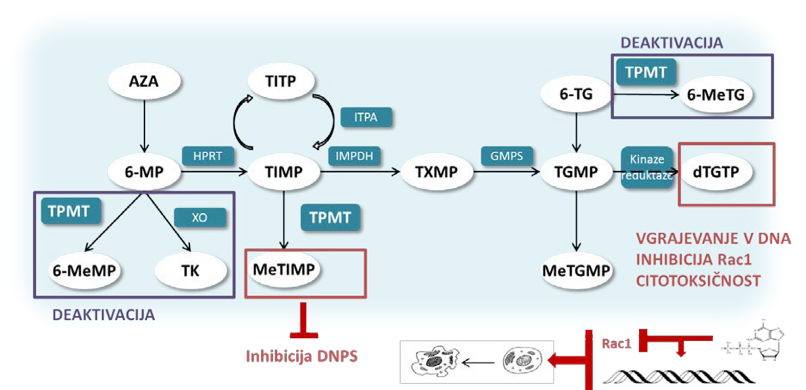
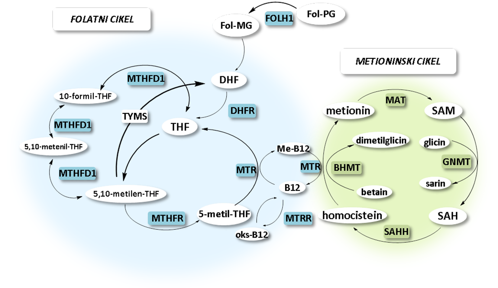

Farmakogenetski označevalci v terapiji akutne limfoblastne levkemije pri otrocih
Pharmacogenetic markers in the therapy of childhood acute lymphoblastic leukemia
Izvleček
Posamezniku prilagojeno zdravljenje predstavlja sodoben koncept v medicinski praksi, ki temelji na spoznanju, da se posamezniki različno odzivajo na določeno terapijo. Osrednji element prilagojenega zdravljenja predstavljajo biološki označevalci, med katere uvrščamo tudi genetske. Med najuspešnejše primere uvajanja farmakogenetskih označevalcev v klinično prakso z namenom prilagajati odmerjanje zdravil posamezniku sodi zdravljenje akutne limfoblastne levkemije (ALL). Ta predstavlja približno 80 % vseh oblik levkemije, ki se pojavijo pri otrocih, mlajših od 15 let, kar jo uvršča na prvo mesto po pogostosti raka v otroštvu. V zadnjih desetletjih smo bili priča izjemnemu napredku na področju zdravljenja ALL, kljub temu pa je le-to še vedno neuspešno pri nekaterih bolnikih bodisi zaradi toksičnih stranskih učinkov, bodisi zaradi neučinkovitosti uporabljenih zdravil, kar vodi v ponovitev bolezni. Dodaten problem predstavljajo še dolgoročni toksični učinki kemoterapije, ki se lahko pojavijo tudi več let po zaključenem zdravljenju. Prav iz teh razlogov se je v zadnjih letih veliko študij posvetilo odkrivanju bioloških označevalcev, na podlagi katerih bi lahko zdravljenje prilagodili posamezniku in s tem izboljšali njegovo učinkovitost in varnost.
Najbolje proučeni so genetski dejavniki, povezani s toksičnostjo 6-merkaptopurina (6-MP), ki predstavlja temelj vzdrževalnega zdravljenja ALL. Encim tiopurin-S-metiltransferaza (TPMT) igra poglavitno vlogo pri deaktiviranju tiopurinov in v veliki meri vpliva na razlike v odzivu posameznikov na zdravljenje. Znano je, da so za znižane encimske aktivnosti v največji meri odgovorni polimorfizmi v genu za
Abstract
Personalised medicine is a contemporary concept in medical practice, based on the observation that individuals respond differently to a particular therapy. Biomarkers, which include genetic markers, are a central element in the development of personalised medicine. Acute lymphoblastic leukaemia (ALL) therapy is among the most successful examples of the implementation of pharmacogenetic markers into clinical practice in order to adjust the dosage of drugs to an individual. ALL accounts for approximately 80% of all forms of leukaemia occurring in children under the age of 15 years, making it the most common childhood cancer. Despite drastic improvements in the treatment of childhood ALL over the past decades, treatment is still unsuccessful in some patients either due to toxic effects, or due to the inefficacy of the drugs used, which leads to a recurrence of the disease. An additional problem is associated with the long-term toxic effects of chemotherapy, which may occur several years after the treatment has been completed. In order to improve safety and efficacy, numerous studies have been performed aiming to identify biomarkers which would enable tailoring treatment to the individual patient and improve treatment’s efficacy and safety.
Of these, the genetic factors associated with the toxicity of 6-mercaptopurine (6-MP), which is the cornerstone of maintenance treatment of ALL, have been studied most thoroughly. Thiopurine S- methyltransferase (TPMT) is a polymorphic enzyme which plays a major role in the deactivation of thiopurines and to a large extent accounts for the differences in individuals’ response to treatment. It has long been known that polymorphisms in the TPMT gene are largely responsible for reduced enzymatic activities, but numerous studies have shown that the accordance between genotype and enzyme activity is incomplete. In many studies published over the past decade, new pharmacogenetic markers have been associated with toxic effects of 6-MP as well as other drugs used for ALL therapy; however, they are not yet used in clinical practice.
1 Uvod
Akutna limfoblastna levkemija (ALL) predstavlja približno 80 % vseh oblik levkemije, ki se pojavijo pri otrocih, mlajših od 15 let, kar jo uvršča na prvo mesto po pogostosti raka v otroštvu (1). Zdravljenje otroške ALL je v zadnjih desetletjih izjemno napredovalo, tako da je trenutno pričakovano preživetje skoraj 90 % (2). Najpomembnejši prispevek k izboljšanju izidov zdravljenja ALL lahko pripišemo napredku na področju razumevanja genetike bolezni in odkritjem številnih bioloških označevalcev, ki omogočajo razvrščanje bolnikov v skupine s tveganjem in izbiro učinkovitejše sheme zdravljenja. Biološke označevalce, ki so pomembni za napoved kliničnega izida, lahko v splošnem delimo v dve skupini. V prvo skupino uvrščamo napovedne biološke označevalce, ki so v pomoč pri napovedovanju verjetnega poteka bolezni ne glede na zdravljenje. Bolniki se na podlagi teh označevalcev razvrščajo v podskupine z različnimi pričakovanimi izidi bolezni (3). V drugo skupino pa sodijo napovedni biološki označevalci, ki so v pomoč pri napovedovanju izida bolezni, a tudi pri izbiri ustreznega zdravljenja, in sicer tako glede izbire kot odmerjanja optimalnega zdravila. Z njihovo pomočjo lahko identificiramo bolnike, pri katerih obstaja večja verjetnost za pojav toksičnih učinkov, zato jim skladno s tem prilagodimo zdravljenje (3). V preglednem članku bomo kratko predstavili metode in pristope k proučevanju bioloških označevalcev in povzeli novejša odkritja na področju napovednih farmakogenetskih označevalcev pri zdravljenju otroške ALL.
2 Pristopi k proučevanju bioloških označevalcev
Sodobne raziskave na področju odkrivanja novih farmakogenetskih označevalcev potekajo na različnih ravneh od celičnih in živalskih modelov do retrospektivnih in prospektivnih kliničnih preskušanj, ki so zasnovani bodisi na t. i. hipotetičnih ali nehipotetičnih pristopih. Klasični hipotetični pristopi v odkrivanju bioloških označevalcev temeljijo na korelaciji med posameznim genom, proteinom ali metabolitom in farmakološkim odgovorom. Postavljena hipoteza izhaja iz predhodnega znanja, za njeno preverjanje pa se oblikuje specifičen eksperiment. Z napredkom v razvoju visoko zmogljivih »omskih« tehnologij, ki omogočajo hkratno merjenje več tisoč spremenljivk, se je pričel uveljavljati tudi t. i. nehipotetični pristop. Ta temelji na analizi genoma, transkriptoma, proteoma in/ali metaboloma in obdelavi podatkov z naprednimi bioinformatičnimi in statističnimi orodji in omogoča širše razumevanje in nov uvid v molekularne mehanizme, ki so odgovorni za posameznikov odziv na zdravljenje.
Večina do sedaj objavljenih študij na področju farmakogenetskih označevalcev, ki bi omogočili posamezniku prilagojeno zdravljenje otroške ALL, temelji na hipotetičnem pristopu – gre za t. i. študije kandidatnih genov.
3 Zdravljenje ALL
Pri zdravljenju ALL ima bistveno vlogo kombinirana kemoterapija, ki jo bolniki prejemajo v obdobju dveh ali treh let. Na izbiro intenzivnosti zdravljenja vpliva predvsem ocena tveganja za ponovitev bolezni, ki temelji na nekaterih kliničnih in laboratorijskih dejavnikih, kot so starost, število levkocitov ob diagnozi, imunofenotip, citogenetske in genetske nepravilnosti, prisotnost ekstramedularne bolezni in levkemije v centralnem živčnem sistemu ter zgodnji odziv na zdravljenje. Podrobneje so napovedni dejavniki predstavljeni v Tabeli 1.
|
Ugodna prognoza |
Neugodna prognoza |
|
Starost ob diagnozi |
|
|
•Od 1 do < 10 let |
•< 1 leta •≥ 10 let |
|
Št. levkocitov ob diagnozi |
|
|
•<50.000/μL |
•≥ 50.000/μL |
|
Imunofenotip |
|
|
•Običajna B-celična ALL (CD10 pozitivna) |
•T-celična ALL •pro B-celična ALL (CD10 negativna) |
|
Levkemija v centralnem živčne sistemu (CŽS) |
|
|
•Negativno (CŽS 1) |
•Pozitivno (CŽS 3) |
|
Citogenetske in genetske značilnosti |
|
|
•Indeks DNA > 1.16 •hipediploidnost (> 50 kromosomov) |
•Indeks DNA < 1.0 •hipoploidnost (< 44 kromosomov) |
|
•t(12;21): ETV6-RUNX1 •znana tudi kot TEL-AML1 |
•t(9;22): BCR/ABL (kromosom filadelfija); •t(4;11): MLL/AF4 •t(1;19): TCF3-PBX1 (tudi E2A-PBX1) •iAMP21 (slabša prognoza le v primeru zdravljenja s standardnimi shemami) |
|
•Delecija ERG |
•delecija IKZF1 •mutacija v JAK2 |
|
Zgodnji odziv na zdravljenje |
|
|
•<0,01 % minimalne preostale bolezni (MRD) po 7 dneh zdravljenja s prednizonom (določeno v periferni krvi) in po končani indukcijski fazi (določeno v kostnem mozgu) |
•> 0,01 % minimalne preostale bolezni (MRD) v periferni krvi po 7 dneh zdravljenja s prednizonom in enim intratekalnim odmerkom metotreksata. |
Za zdravljenje ALL se uporabljajo različne sheme, ki so jih razvile skupine strokovnjakov, kot so nemška skupina Berlin-Frankfurt-Münster Group (BFM) (15), skupina bolnišnice St. Jude Children‘s Research Hospital (SJCRH) (16), skupina inštituta Dana-Farber Cancer Institute ALL Consortium (DFC) (17), skupina Children’s Oncology Group (COG) (18) in skandinavsko združenje Nordic Society of Paediatric Haematology and Oncology (NOPHO) (19), vse pa vključujejo kemoterapijo, ki je razdeljena v tri faze zdravljenja:
1.Faza uvodnega intenzivnega zdravljenja (indukcija). Cilj te faze je doseči popolno remisijo in običajno traja štiri do pet tednov. Zdravljenje temelji na kombinaciji treh ali štirih zdravilnih učinkovin, in sicer vinkristina, kortikosteroida (prednizon ali deksametazon) in L-asparaginaze z antraciklinom (doksorubicin ali daunorubicin) ali brez njega. Četrto ali peto zdravilno učinkovino (antraciklin in/ali ciklofosfamid) običajno prejmejo otroci, ki so razvrščeni v skupino (ALL) z visokim ali zelo visokim tveganjem (20).
2.Faza ponovnega intenzivnega zdravljenja (konsolidacija in reindukcija). Cilj konsolidacijske faze je uničenje preostalih (rezidualnih) levkemičnih celic, ki ostanejo po indukcijski fazi. Gre za intenzivno terapijo, pri kateri se uporabljajo podobne kombinacije zdravilnih učinkovin kot v prvi fazi, v režim zdravljenja pa so vključeni še metotreksat v visokih odmerkih v kombinaciji s 6-merkaptopurinom (6-MP), vinkristin in glukokortikoid. Bolniki 20–30 tednov neprekinjeno prejemajo tudi L-asparaginazo. Fazi konsolidacije običajno sledi še t. i. reindukcijska faza zdravljenja, v kateri bolniki prejmejo kemoterapijo, ki je po sestavi zelo podobna kot v fazi indukcije (20).
3.Vzdrževalna faza. Običajno traja dve leti ali več in temelji na dnevnem peroralnem jemanju 6-MP in tedenskem peroralnem jemanju metotreksata s periodičnimi odmerki vinkristina in deksametazona ali brez njiju (20).
Za preprečitev razširitve levkemičnih celic v centralnem živčnem sistemu (CŽS) poteka še preventivno zdravljenje CŽS, in sicer v obliki intratekalne in sistemske kemoterapije, včasih tudi obsevanja glave. Pri bolnikih z ALL z visokim tveganjem se izvaja tudi alogenična presaditev krvotvornih matičnih celic (20,21).
Zdravljenje otrok z ALL v Sloveniji je v obdobju 1967–1973 potekalo po protokolu, prirejenem po različnih shemah zdravljenja, v obdobju 1973–1983 pa v skladu s shemo, povzeto po Pediatric Oncology Group (POG). Nato so se od leta 1983 dalje uporabljale različne sheme, povzete po protokolih nemške skupine Berlin–Frankfurt-Münster (ALL-BFM 83, ALL- BFM 86, ALL- BFM 90, ALL- BFM 95, protokol študije ALL IC BFM 2002 in ALL BFM 2010) (1,22).
Kljub izjemnemu napredku v zadnjih desetletjih je zdravljenje ALL v nekaterih primerih še vedno neuspešno bodisi zaradi toksičnih stranskih učinkov, med katerimi so lahko tudi življenjsko ogrožajoči, bodisi zaradi neučinkovitosti uporabljenih zdravil, kar vodi v ponovitev bolezni (20). Med najpomembnejše neželene učinke vinkristina uvrščamo hematološko toksičnost in nevrotoksičnost (23), medtem ko so najpomembnejši neželeni učinki L-asparaginaze alergijske reakcije, vključno z anafilakso, motnje strjevanja krvi in pankreatitis (24). Pri bolnikih, ki dalj časa jemljejo glukokortikoide, se lahko v levkemičnih celicah razvije rezistentnost na steroide, pojavljajo pa se tudi neželeni učinki, kot so pogoste okužbe ali sepsa, osteonekroza, diabetes in miopatija (25). Pri zdravljenju z metotreksatom lahko pride do neželenih učinkov na prebavilih, okvare sluznice ali mukozitisa, hepatotoksičnosti, nefrotoksičnosti ali do zavore delovanja kostnega mozga in nevrotoksičnosti (26). Pri uporabi 6-MP pa lahko pride do zavore delovanja kostnega mozga in hepatotoksičnosti, ki lahko v nekaterih primerih zahtevajo hospitalizacijo in prekinitev zdravljenja (22,27). Poleg neželenih učinkov, ki se pojavljajo med samo terapijo, problem predstavljajo tudi dolgoročni toksični učinki kemoterapije, kot so kardiomiopatija, osteonekroza in sekundarni tumorji, ki se lahko pojavijo tudi več let po zaključenem zdravljenju (28,29).
4 Farmakogenetski označevalci toksičnosti zdravljenja ALL
Zaradi omenjenih neželenih učinkov, ki se lahko pojavijo med zdravljenjem ALL, se je v zadnjih letih veliko študij posvetilo odkrivanju novih z zdravljenjem povezanih bioloških označevalcev, ki bi omogočili posamezniku prilagojen izbor in odmerjanje zdravil. Med temi so najbolje proučili farmakogenetske dejavnike, ki so povezani s toksičnostjo 6-merkaptopurina v vzdrževalni fazi zdravljenja ALL (opisani v poglavjih 4.1. in 4.2.), nekoliko manj pa farmakogenetski dejavniki, ki so povezani z zdravili, ki se uporabljajo v preostalih fazah zdravljenja (opisani v poglavju 4.3.).
4.1 Tiopurin-S-metiltransferaza (TPMT) kot napovedni farmakogenetski označevalec toksičnosti 6-merkaptopurina v vzdrževalni fazi zdravljenja ALL
Ene prvih študij kandidatnih genov pri zdravljenju ALL so študije tiopurin-S- metiltransferaze (TPMT), ki sodi med najuspešnejše klinično uporabne farmakogenetske označevalce za prilagajanje odmerjanja 6-MP. Ta predstavlja osnovo dolgoročnega vzdrževalnega zdravljenja ALL, ki poleg azatioprina (AZA) in 6-tiogvanina (6-TG) sodi med tiopurinske učinkovine. Tiopurini so predzdravila, ki preko aktivnih presnovkov delujejo citotoksično in imunosupresivno. Zato se poleg zdravljenja ALL uporabljajo tudi pri nekaterih avtoimunskih boleznih, kot sta na primer Chronova bolezen in ulcerativni kolitis, in za preprečevanje zavrnitve organov po presaditvah (30).
Poglavitni mehanizem citotoksičnega delovanja tiopurinov je vgrajevanje 6-tiogvanozinov (6-TGN) v DNA. To sproži mehanizem popravljanja neujemanja, ki je neuspešen, kar vodi v prekinitev hčerinske verige DNA. V naslednji fazi celičnega cikla pride zaradi porušene strukture DNA do zaustavitve celičnega cikla in programirane celične smrti (apoptoze) (31). Poleg tega lahko apoptozo 6-TGN sprožijo tudi neposredno preko mitohondrijske poti, pri čemer so v signalizacijski poti vpleteni proteini Rac1, Bcl-xL in NF-κB (32). Kot potencialni mehanizem za doseganje imunosupresivnega učinka, ki pa po vsej verjetnosti manj prispeva k citotoksičnemu učinku, se v literaturi omenja tudi zaviranje
Presnova tiopurinov, ki je shematsko predstavljena na Sliki 1, poteka po treh glavnih poteh. Fosforibozilacija s hipoksantin-gvanin fosforiboziltransferazo (HPRT) predstavlja aktivacijsko pot, pri čemer preko številnih vmesnih presnovkov, kot je na primer tioinozinmonofosfat (TIMP), vodi v sintezo aktivnih 6-TGN. Po drugi strani predstavljata oksidacija s ksantin oksidazo (XO) in S-metilacija s TPMT deaktivacijski poti tiopurinov (45). Ker se XO izraža predvsem v jetrih in črevesju, je ta encim pomemben pri metabolizmu prvega prehoda, pri čemer se v neaktivno tiosečno kislino pretvori približno 84 % odmerka 6-MP. Kljub temu, da je XO polimorfen encim, zaradi česar obstajajo med posamezniki razlike v encimski aktivnosti, pa študije doslej še niso ugotovile njihovega pomembnega vpliva na izid zdravljenja ALL (34). Druga pot deaktiviranja tiopurinov, ki je poglavitna predvsem v krvotvornih tkivih, poteka preko

Rdeče obrobljeni so aktivni presnovki z opisom mehanizma delovanja, vijolično obrobljeni so neaktivni presnovki. 6-MP: 6-metilmerkaptopurin; 6-MeMP: 6-metilmerkaptopurin; 6-MeTG: 6- metiltiogvanin; 6-TG: 6-tiogvanin; AZA: azatioprin; DNPS:
Tiopurin S-metiltransferaza (TPMT; EC 2.1.1.67) je citosolni encim, ki se uvršča v družino od S-adenozilmetionina odvisnih metiltransferaz. Čeprav je njegova vloga pri presnovi tiopurinov dobro ovrednotena, pa njegova endogena vloga in endogeni substrat še vedno nista poznana. Encimska aktivnost TPMT se med posamezniki precej razlikuje. Porazdelitev aktivnosti v kavkaški populaciji je trimodalna, pri čemer 89–94 % posameznikov izkazuje visoko oziroma normalno, 6–11 % posameznikov srednjo in 0,3 % posameznikov nizko encimsko aktivnost (35). Poglavitni vzrok za znižanje aktivnosti pripisujemo prisotnosti polimorfizmov v genu

B12: vitamin B12; oks-B12: oksidirana oblika vitamina B12; BHMT: betain-homocistein metiltransferaza; DHFR: dihidrofolat reduktaza; DHF: dihidrofolat; FOLH1: folat hidrolaza; Fol-MG: folat monoglutamat; Fol-PG: folat poliglutamat; GNMT: glicin N-metiltransferaza; Me-B12: metiliran vitamin B12; MAT: metionin adenoziltransferaza; MTHFD1: metilentetrahidrofolat dehidrogenaza 1; MTHFR: 5,10-metilentetrahidrofolat reduktaza, MTR: metionin sintaza; MTRR: metionin sintaza reduktaza; SAM: S-adenozil metionin; SAH: S-adenozil homocistein; TYMS: timidilat sintaza; SHMT: serin hidroksimetiltransferaza; THF: tetrahidrofolat.
SAM namreč nastaja iz metionina v metioninskem ciklu, po prenosu metilne skupine se pretvori v S-adenozil homocistein (SAH), ta pa naprej v homocistein. Homocistein nato vstopi v pot transsulfuracije ali se pretvori nazaj v metionin, pri čemer je substrat v reakciji 5-metiltetrahidrofolat (5-metil-THF). Ta nastaja v reakciji, ki jo katalizira 5,10- metilentetrahidrofolat reduktaza (MTHFR), eden najpomembnejših encimov folatnega cikla (Slika 2). Polimorfizmi v genu
4.2 Drugi farmakogenetski dejavniki, povezani s toksičnostjo v vzdrževalnem zdravljenju ALL
V zadnjih letih je bilo objavljenih več študij, ki kažejo, da so s toksičnostjo vzdrževalnega zdravljenja povezani tudi nekateri polimorfizmi v genu za nudiks hidrolazo 15 (
S toksičnostjo vzdrževalnega zdravljenja so v nekaterih študijah povezovali tudi polimorfizme v genih
4.3 Farmakogenetski dejavniki, povezani s toksičnimi učinki v ostalih fazah zdravljenja ALL
V zadnjih letih so obširno proučevali tudi farmakogenetske dejavnike, povezane s toksičnostjo in učinkovitostjo metotreksata, ki se v visokih odmerkih uporablja v konsolidacijski fazi zdravljenja otroške ALL. V študijah kandidatnih genov so proučevali predvsem pogoste polimorfizme v genih za encime, povezane s folatnim ciklom, kot so MTHFR, metionin sintaza reduktaza (MTRR), timidilat sintaza (TYMS), dihidrofolat reduktaza (DHFR), metilentetrahidrofolat dehidrogenaza (MTHFD1) in serin hidroksimetiltransferaza (SHMT1) (57-60). Med temi sta bila gotovo najbolj proučevana polimorfizma
Farmakogenetski označevalci, ki so povezani s toksičnostjo preostalih učinkovin, ki se uporabljajo za zdravljenje ALL, so zaenkrat še slabše raziskani. V posameznih študijah so ugotavljali, da imajo posamezniki, ki nosijo alel HLA-DRB*07:01, večje tveganje za pojav preobčutljivostne reakcije pri zdravljenju z L-asparaginazo, ki se pri ALL uporablja tako v indukcijski kot v konsolidacijski fazi (71). Z večjim tveganjem za preobčutljivost so v nekaterih študijah povezovali tudi več polimorfizmov v genu
|
Učinkovina in gen |
Stopnja dokazov* |
|
6-merkaptopurin (6-MP) |
|
|
|
1A |
|
|
1B |
|
|
3 |
|
Metotreksat |
|
|
|
2A |
|
|
2B |
|
|
3 |
|
Asparaginaza |
|
|
|
3 |
|
Vinkristin |
|
|
|
2B |
|
|
3 |
|
Glukokortikoidi (deksametazon) |
|
|
|
3 |
*Klasifikacija stopnje dokazov: (1A) Za kombinacijo polimorfizmov v genu in učinkovine obstajajo klinične smernice Združenja za implementacijo farmakogenetike v klinično prakso (CPIC) ali posameznih združenj zdravniške stroke. (1B) Za kombinacijo polimorfizmov v genu in učinkovine obstajajo številni trdni dokazi o povezanosti s toksičnostjo ali z učinkovitostjo, ki so bili prikazani v več neodvisnih študijah. (2A) Kombinacija polimorfizma v genu in učinkovine sodi med zelo pomembne farmakogene, za katere je poznan njihov funkcionalni pomen. (2B) Za kombinacijo polimorfizma in učinkovine obstajajo srednje trdni dokazi o povezanosti s toksičnostjo ali z učinkovitostjo. Povezava je prikazana v več kot eni študiji, vendar pa lahko obstajajo tudi študije, ki povezave ne potrjujejo, ali pa je vpliv polimorfizma majhen. (3) Povezanost kombinacije polimorfizma in učinkovine s toksičnostjo ali učinkovitostjo je prikazana v eni pomembni, a še ne ponovljeni študiji, ali pa so dokazi o povezanosti iz različnih študij nekonsistentni.
5 Zaključek
Sodobni pristopi v medicini so usmerjeni v posamezniku prilagojeno zdravljenje, ki lahko, v primerjavi s tradicionalnim pristopom, omogoči bolj učinkovito in varno uporabo zdravil, zmanjša stranske učinke in zagotavlja stroškovno učinkovito farmacevtsko oskrbo. Tak pristop je osnovan na selektivnih in občutljivih bioloških označevalcih, zato je njihovo proučevanje postalo osrednji element tako v procesu razvoja zdravil kot v obdobju po pridobitvi dovoljenja za promet z zdravilom (77).
Eden prvih napovednih farmakogenetskih označevalcev, ki je bil uspešno uveden v klinično prakso, je genotip